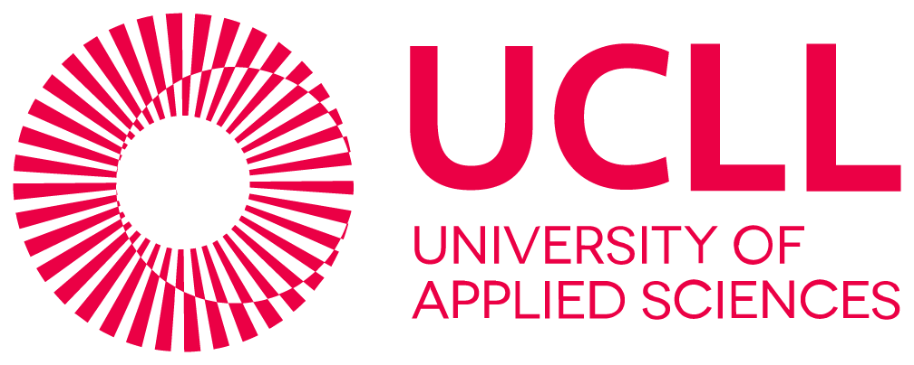
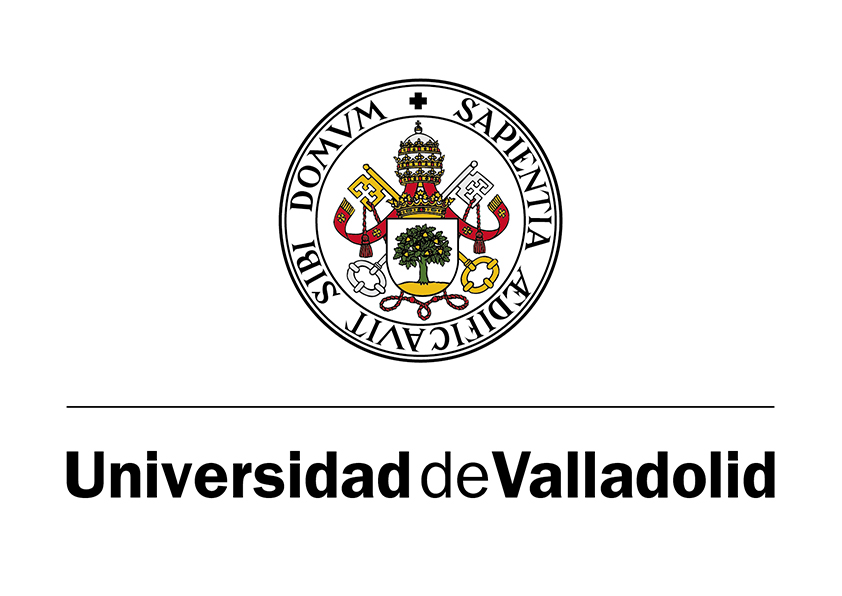
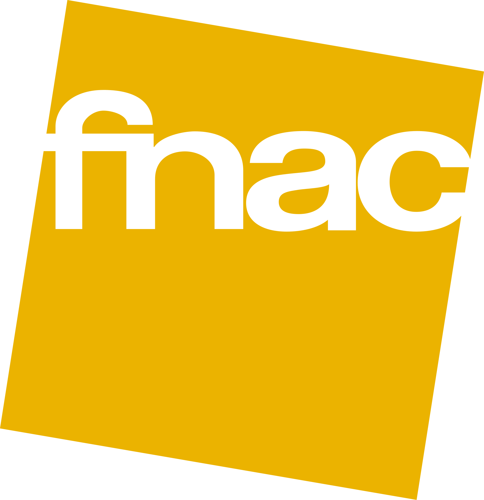

🎓 Formación Académica
- Doble Grado en Publicidad y Marketing – Universidad Villanueva (2022 - Actualidad) – Nota media: 8,71 - Excelencia Académica
- Bachillerato en Ciencias Sociales – Fomento Fundación - Nota media: 9,17
- Educación Secundaria – Colegio J.H: Newman - Nota media: 7,5
🏆 Otros datos de interés
- 🏅 MEJOR TRABAJO DE CLASE EN LAS ASIGNATURAS:
- Marketing Digital
- Redacción Publicitaria
- Proceso Publicitario
- Fundamentos de la Publicidad
- Análisis de Mercados Cualitativos
- Análisis del Consumidor
- Análisis de Mercados Cuantitativos
- 🏅 2º PREMIO SEMANA BIP "INTERCULTURAL COMUNICATION" UCLL LEUVEN
- 🚀 PARTICIPACIÓN EN LOS CONCURSOS:
- 📝 Publicatessen 2024/2025
- 📝 "La Pieza"
- 📝 Mahou Lab


🛠️ Experiencia Laboral
- Vendedor en FNAC – Atención al cliente (diciembre 2023 - enero 2024) / Producto técnico (diciembre 2022 - febrero 2023) (diciembre 2024- enero 2025)
- Ayudante de cocina y camarero – Eventos multitudinarios (2024-2025)

🌍 Idiomas
- Español (Nativo)
- Inglés (Nivel B2 – Cambridge)
✨ Habilidades
- ✅ Responsable, formal y proactivo
- ✅ Buen trato con el público y trabajo en equipo
- ✅ Carné de conducir B2
- ✅ Manejo de programas de IA y software profesional
❤️ Voluntariados
- Banco de Alimentos (2017 - 2018)
- Campaña Villanueva Solidaria (2020)
- Voluntariado con personas sin hogar (2023)